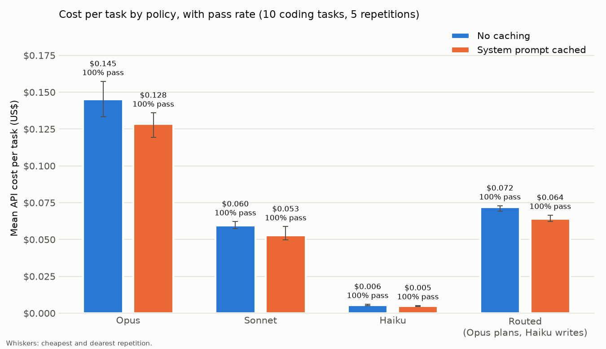

agent-cost-audit
How much do model routing and prompt caching really cut the cost of an AI coding agent, and does quality hold? Measured on 829 real API calls.
-96%cost, Haiku alone vs Opus
-51%cost, routed vs Opus
-12% to -11%extra saving from caching
400/400task runs passed
- The question
- On the same coding-agent workload, how much do model routing and prompt caching cut API cost, and does quality hold?
- The answer
- Haiku 5.5 alone did the work for 96% less than Opus 5.5, and passed every task. Routing (Opus plans, Haiku writes) saved 51%. Caching the system prompt saved a further 11% to 12%.
- The catch
- Caching cannot touch output tokens, which were 73% to 91% of spend. Routing spent 95% of its budget on the Opus planning step, and never needed the Opus fix it held in reserve. In a separate smoke test with a lower output limit, the cheap model was cut off mid-answer and the routed policy failed the hardest task.
- The evidence
- 10 tasks × 8 policies × 5 repetitions: 400 task runs, 829 API calls, $26.62. Hidden tests ran in a Docker sandbox with no network. Every result on this page is generated from that logged run.

Cost and quality by policy
| Policy | Cost per run of all 10 tasks | vs Opus | Passed | First try (95% interval) |
|---|---|---|---|---|
opus | $1.45 | baseline | 50/50 | 94% (84% to 98%) |
opus_cached | $1.28 | -12% | 50/50 | 94% (84% to 98%) |
routed | $0.72 | -51% | 50/50 | 90% (79% to 96%) |
routed_cached | $0.64 | -56% | 50/50 | 92% (81% to 97%) |
sonnet | $0.60 | -59% | 50/50 | 94% (84% to 98%) |
sonnet_cached | $0.53 | -64% | 50/50 | 96% (87% to 99%) |
haiku | $0.0557 | -96% | 50/50 | 90% (79% to 96%) |
haiku_cached | $0.0491 | -97% | 50/50 | 94% (84% to 98%) |
What caching added on its own
| Models | Saving from caching | Range over repetitions | Cache writes | Output share of spend |
|---|---|---|---|---|
opus | -12% | -24% to -1% | 2 | 77% |
sonnet | -11% | -17% to +3% | 1 | 73% |
haiku | -12% | -17% to -7% | 1 | 85% |
routed | -11% | -13% to -9% | 2 | 83% |
Where the money goes
| Policy | Plan | Write | Fix | Output tokens |
|---|---|---|---|---|
opus | 47% | 48% | 6% | 77% |
opus_cached | 47% | 47% | 6% | 85% |
sonnet | 38% | 59% | 3% | 73% |
sonnet_cached | 38% | 60% | 2% | 83% |
haiku | 31% | 62% | 7% | 85% |
haiku_cached | 29% | 65% | 6% | 90% |
routed | 95% | 5% | 0% | 83% |
routed_cached | 95% | 5% | 0% | 91% |
How it was measured
- Every policy runs the same loop (plan, write, test, at most two fixes), the same ten tasks and the same system prompt at effort
medium. Only the model per step, and whether the system prompt is cached, change. - Cost is computed per call from the API's own token counts, at prices from the published price list, checked 2026-11-19.
- A hard budget cap reserves each call's worst-case cost before it is made.
- Limits: ten synthetic tasks, five repetitions, one provider and one effort setting. Every policy passed every task, so pass rate cannot separate the models here.
Method, decisions, code and the raw-data schema: github.com/prattaybanik03/agent-cost-audit.